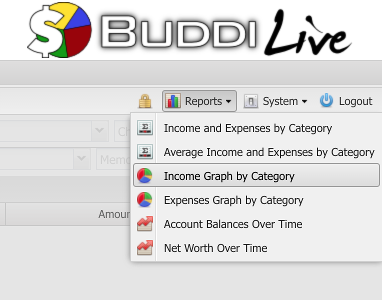
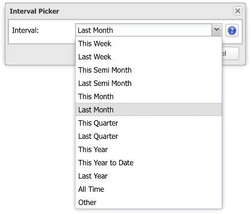
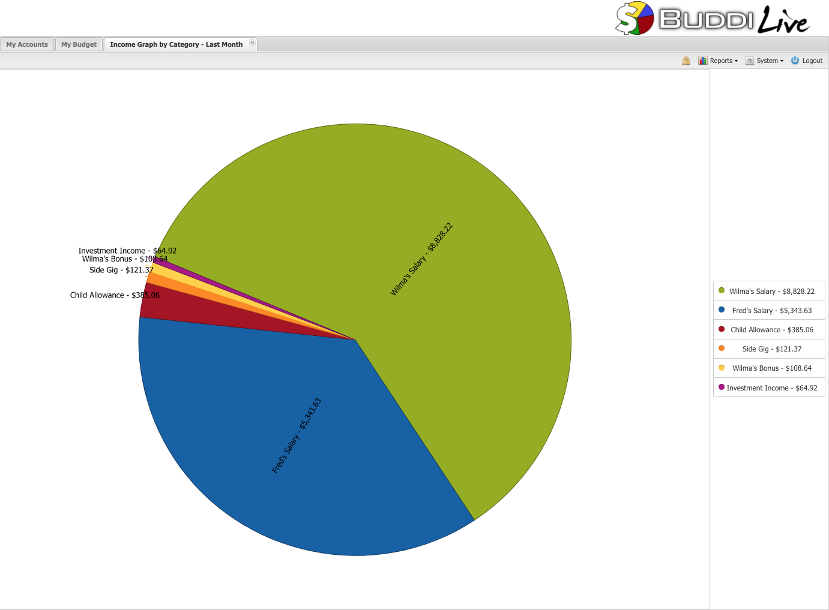
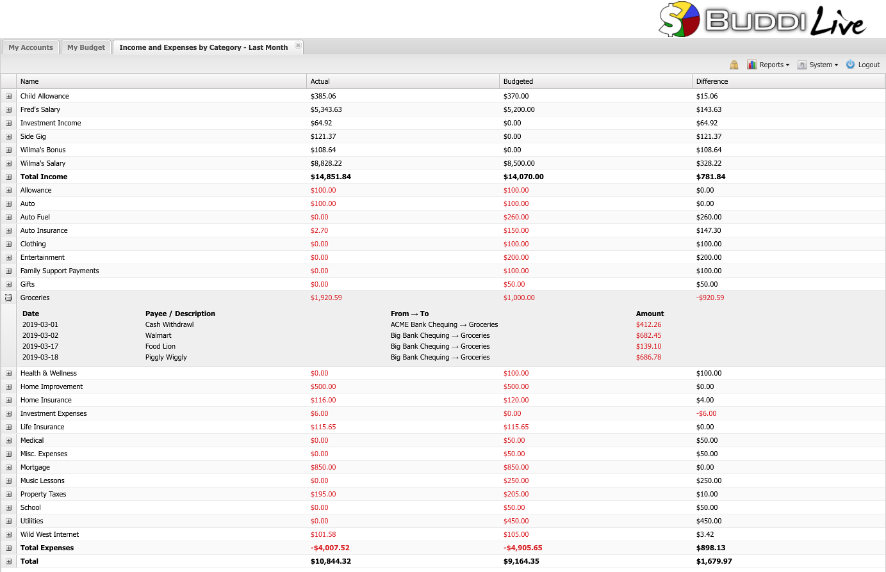

Reports are how you can review your budget, and verify how well you kept to it. Buddi Live includes several useful reports. In this tutorial, we will only cover a few of the reports, but all of them will use the same basic methods.
When you first click on the Reports menu, you will see a list of possible reports. Select the one which you wish to view. For instance, in the screenshot below, we are about to select the Income Graph by Category.

When you select a report, a window will appear prompting you for the date range. There are a number of presets (This Month, Last Month, This Year To Date, etc). In addition you can pick start and end dates manually by selecting the 'Other' option.

After selecting the date, a window will open showing the results of the report within the specified date range. An example of a Pie Graph report is shown below.

Not all reports are graphical. For instance, the report 'Income and Expenses by Category' shows a chart like the screenshot below. The Actual column shows what you actually spent; the Budgeted column shows what you had budgeted. The Difference column compares the Actual vs. Budgeted amounts. Red amounts are over spending (or under earning for income categories), while black amounts are under spending (or over earning for income categories). The Total rows show the total income, total expenses, and overall total. In this month, you can see that Fred and Wilma had a net income of almost $11,000. If you want to see details of why a particular budget line is the value shown, you can expand each category to see all the transactions which make up the total.
